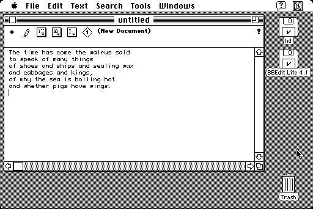

Download
BBEdit_Lite_4.1.zip (868K) BBEdit Lite 4.1 repackaged into a zipped hfs disk image and checksum file. The disk image can be mounted with Mini vMac.
BBEdit_Lite_4.1.bin (889K) BBEdit Lite 4.1 in the original format.
copyright: Bare Bones Software, Inc.
mod date: Feb 20, 1998
license: freeware
last known url
(gone)
A "freeware derivative of BBEdit 4.5, the popular and critically acclaimed text and HTML editor for Web authors, programmers, on-line-service users, and anyone else who needs to edit plain-text files." Requires system 7.0 or later. Bare Bones Software still develops and sells BBEdit for OS X, with TextWrangler being the successor to BBEdit Lite. (BBEdit on Wikipedia)

Download other versions
BBEdit_Lite_3.5.1.zip (430K) BBEdit Lite 3.5.1 in zipped hfs disk image.
BBEdit_Lite_3.5.1.hqx (594K) BBEdit Lite 3.5.1 in the original format.
BBEdit_2.1.3.zip (111K) BBEdit 2.1.3 in zipped hfs disk image.
BBEdit_2.1.3.sea.hqx (172K) BBEdit Lite 2.1.3 in the original format.
Versions 3.5.1 and 2.1.3 work both in System 6 and System 7.
If you find these downloads useful, please consider helping the Gryphel Project, which hosts them.
Here are the md5 checksums for the downloads, signed with Gryphel Key 5:
--------- GRY SIGNED TEXT --------- de0577edca489e998a1d5e4ef3297fea BBEdit_2.1.3.zip 62447fcbe4f3072569431c7e87694a74 BBEdit_2.1.3.sea.hqx b4bc1fd81fbde41addcfadf37ffdb3f2 BBEdit_Lite_3.5.1.zip f7d90ca805e6c199159bcf7f405a8a8e BBEdit_Lite_3.5.1.hqx 60fd334b8f5895eeec09a0414caf06c2 BBEdit_Lite_4.1.zip ee39cf98826ded92cc8359bc576bdce3 BBEdit_Lite_4.1.bin ------- BEGIN GRY SIGNATURE ------- Gry/4Xa8CFcUzxdN/CWPR5ELkeqimaVR09hTbuSH0JG6255GwmALBYss1IXRWHUi 9SfNqIw8tGrZpYfNV1soqbWiYwD43vdLkHtMLc/Z6wKCusKQEaiCJ3nUB8zSKrVF Hbyk86c0uqzYOcBOFtLWpb8Sv8jM1L/o1AMEk4c8PO/LtkWYvUZSGvQOQ4m6RWUd -------- END GRY SIGNATURE --------